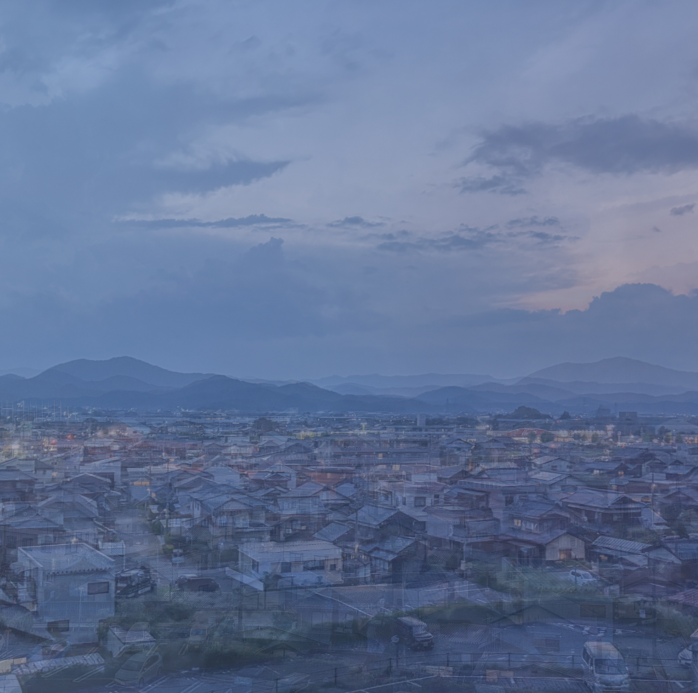
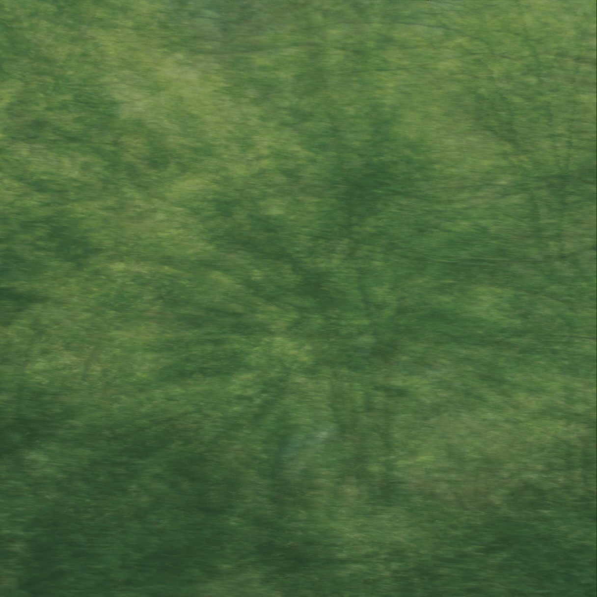
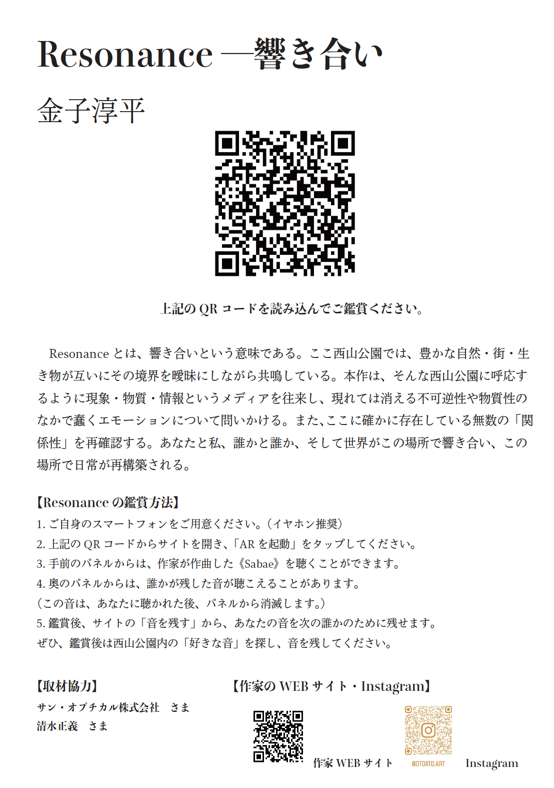

Resonance
2025 / Mix Media
鯖江市制70周年記念 まちなか芸術祭2025 出展作品
Sasebo Sound Chronicle Award ファイナリスト 受賞作品
本作は、福井県鯖江市での「さばえ まちなか芸術祭」に向けて制作した。AR技術やサウンドなどを用いて、日常に存在する様々な「境界線の響き合い」として解釈・表現する、サイトスペシフィックなサウンド・インスタレーションだ。
Resonance とは、響き合いという意味である。ここ西山公園では、豊かな自然・街・生き物が互いにその境界を曖昧にしながら共鳴している。本作は、そんな西山公園に呼応するように現象・物質・情報というメディアを往来し、現れては消える不可逆性や物質性のなかで蠢くエモーションについて問いかける。また、ここに確かに存在している無数の「関係性」を再確認する。あなたと私、誰かと誰か、そして世界がこの場所で響き合い、日常が再構築される。